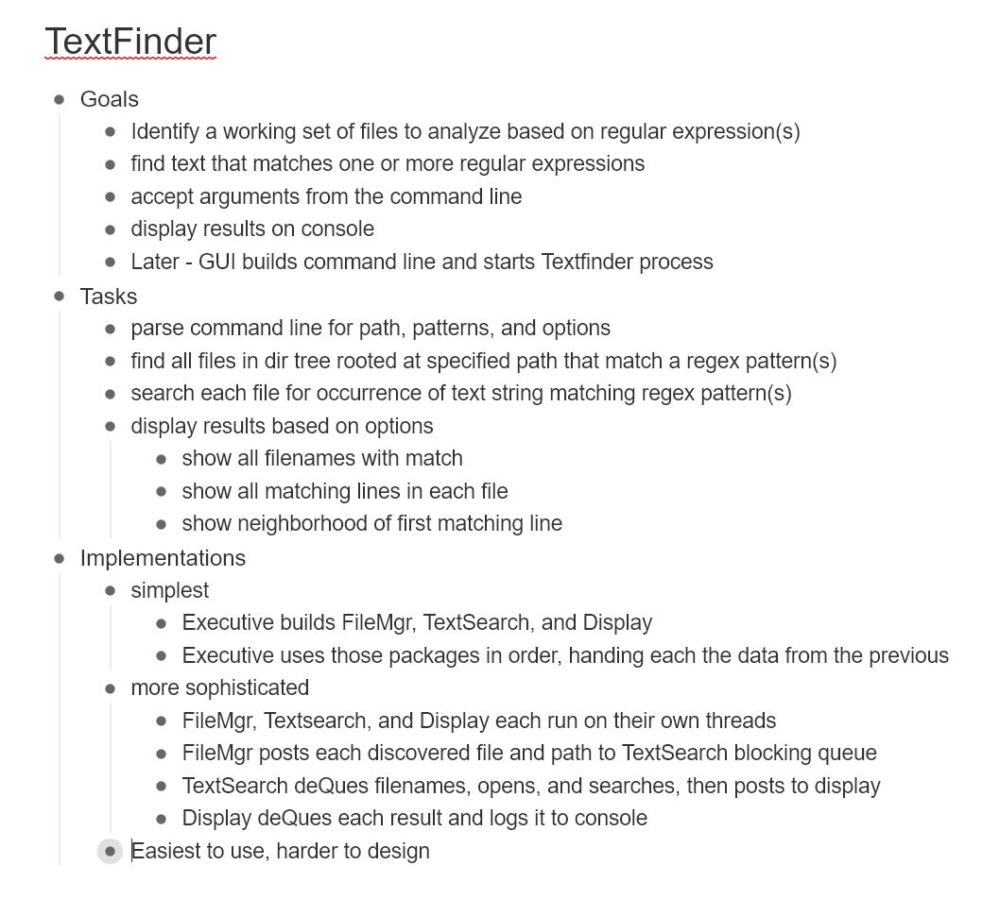
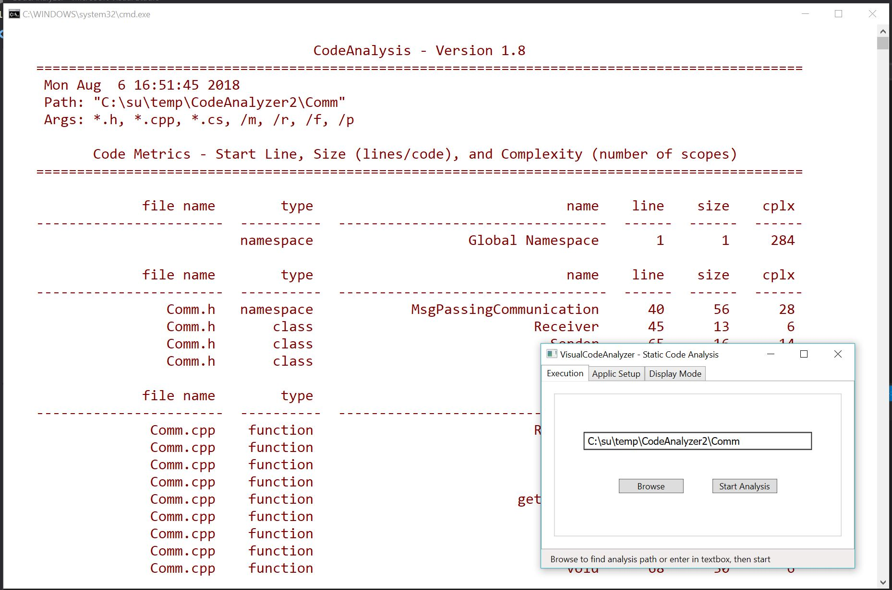

TextFinder Design in Workflowy

TextFinder Packages in gliffy

Code Analyzer in Action
Start a Design:
Write a project statement:
- This should be a brief document - usually one or two pages.
- It should capture your concept: How the program will be used, its top-level structure, and any issues you can think of.
- Develop its requirements as a short itemized list with comments and footnotes as needed.
- It's OK if this is handwritten and informal.
Create a list of tasks and define a program structure:
- Make a list of required program tasks - each task is a necessary program activity and will be a candidate package.
- Draw a package diagram, thinking about single responsibility principle, communication, computational flow.
- You may have to repeat the two steps above to arrive at a sensible structure.
- Rough in classes with perhaps many stub methods. Visual Studio is a great tool for that.
- Critisize and edit.
Start an Implementation:
Try to write good code for the implementation:
- Fill in the details for each package, testing as you go (write test stubs). Write documentation prologues.
- Start with a package that doesn't depend on any of the others. Continue with packages that depend only on the already implemented and construction tested packages.
- When much of the functionality is in place, if you have more than a few packages, build a single-user test harness and use it to make sure that things work as you intend.
Integration:
- If you are collaborating with other developers, integrate often and resolve integration problems before continuing.
-
Integration can work relatively smoothly if each package has a single owner and packages
that are used by packages with different owners provide contracts for use through interfaces
and object factories.
Single package ownership implies that almost all of the packages will be relatively small. That's good - easy to understand and easy to test.
Criticize and improve your implementation:
Is this good code?
- Does your implementation follow established design principles?
- Run the code analyzer on your project. You will find that in CppCodeAnalyzer Repository.
-
Refactor oversize and overcomplex methods.
- Ask yourself if all the methods are small, simple, easy to understand, and easy to test.
- Do any of the methods require knowledge of their design to use correctly? If so, try to make them private, accessed by public methods that do not disclose design details.
-
Are you happy with the structure?
- You have some reusable packages.
- The solution structure is as simple as you think it can be.
- Each package has a single responsibility. - Have you factored out utilities?
- Have you made small utilities header only?
- Have you built most of the packages as static libraries?